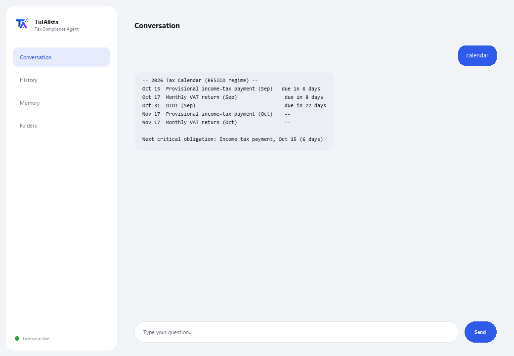

Tax Compliance Agent
Organizes your tax documents, builds your obligations calendar, and warns you before every SAT deadline.
What does it solve and what do you need?
Missing a SAT deadline costs fines and surcharges. This agent turns the folder where you keep your tax documents (invoices, filings, certificates, CFDI XML) into a compliance dashboard: it tells you what's due soon, what might be missing, and what expenses could be deductible — all calculated on your own machine.
- You need: your license key (TIA-XXXX-XXXX-XXXX-XXXX) and the folder with your documents. No Python, no technical knowledge.
- First result in under 5 minutes: install, activate, pick your folder, and run calendar to see your obligations for the year.
- Your tax documents never leave your computer — the analysis runs locally.
soporte@tuialista.com or visit tuialista.com/soporte — we usually reply the same business day.1 What this agent does
You point it at the folder with your tax documents and it:
- Indexes them (PDF, Word, Excel, CSV, TXT, CFDI XML, even in subfolders) and extracts the key data: tax ID, tax regime, periods, document type, VAT, income tax, withholdings, total and dates.
- Builds an obligations calendar for the fiscal year with typical deadlines based on your detected tax regime.
- Warns you about obligations coming due soon (and recently missed ones).
- Detects possible deductions mentioned in your documents.
- Detects documents or months that might be missing from your records.
- Generates an executive tax summary of the period, with recommendations.
- Answers free-form questions about your tax situation, in your own language.
The result: you reach every SAT deadline organized and with no surprises — without opening each file one by one to know where you stand.
2 Installation (2 minutes)
For Windows. No constant internet connection needed, and nothing gets uploaded to the cloud.
Download the installer from tuialista.com/descargar (Tax agent) and open it. It creates a desktop shortcut with the logo — no Python or terminal needed.
Double-click the new icon. Paste your license key (you received it by email when you bought it) and click Activate. You'll see a green checkmark once it's valid.
Select the folder with your tax documents and click Start using the agent. Next time you open it, it starts right up — it remembers your key and your folder.
3 How to use it
The agent opens a chat window, like a messaging app — not a programmer's black screen. You type your command or question in the text box below, hit Send (or Enter), and the reply appears as a message, just like in this real image:

The commands below are the words you can type in that same text box:
> calendarYour obligations for the year: provisional income-tax payments, monthly VAT, DIOT and annual return, with typical deadlines based on your regime.
> obligations [days]What's due soon — by default the next 30 days, including recently missed ones, sorted by urgency. E.g.: obligations 15.
> deductionsDetects mentions of potentially deductible expenses (rent, professional fees, gas, software, social security...) and which files they appear in.
> missingMonths of the fiscal year with no receipts, and expected document types that weren't found.
> summaryExecutive tax summary: overall situation, available documentation, critical obligations, possible deductions and recommendations.
> analyze <file>Tax ID, type, regime, periods, VAT, income tax, withholdings, total and dates extracted from a specific document. E.g.: analyze declaracion_mayo.pdf.
> free-form question?You can type any question in natural language, e.g.: what obligations do I have under the RESICO regime?
> exitEnds the session (exit also works).
Want to see all 20 full recipes with a real example of each? Check the Recipe catalog — a separate document because it's long: catalogo_recetas.pdf next to this manual, or the interactive version at tuialista.com/guia/fiscal/recetas.
4 Common use examples
Prep the month
obligations 30 → missing
Review deductions before the annual return
deductions → summary
See the full calendar for the year
calendar
A quick question
when is my annual return due as an individual taxpayer?
5 Frequently asked questions
Do my tax documents get uploaded to the internet?
What formats does it accept?
Are the calendar dates official?
Does this replace my accountant?
How does it know my tax regime?
Are the deductions it detects definitely deductible?
Are the VAT/income tax amounts it extracts exact?
Does it read a scanned PDF?
What language does it reply in?
Does it modify my documents?
6 Troubleshooting
It won't read a .pdf, .docx or .xlsx
It shows “0 documents indexed”
It doesn't detect my tax ID or regime
It says “Invalid license” or asks to reconnect
“No AI providers configured”
None of these fixed your problem? Write to us directly — we'll gladly look into it with you.
soporte@tuialista.com or visit tuialista.com/soporte — we usually reply the same business day.7 Privacy and confidentiality
Your tax documents never leave your computer.
- The agent reads, indexes and extracts data locally, on your own machine. It doesn't upload your documents to any server or to the SAT.
- The calendar, obligations, deductions, missing items and document analysis are all calculated on your machine.
- The only thing that travels over the internet is: (1) a check that your license is active — which doesn't include your documents —, and (2) when you use summary or ask a free-form question, a relevant fragment of information is sent to the AI engine to draft that reply.